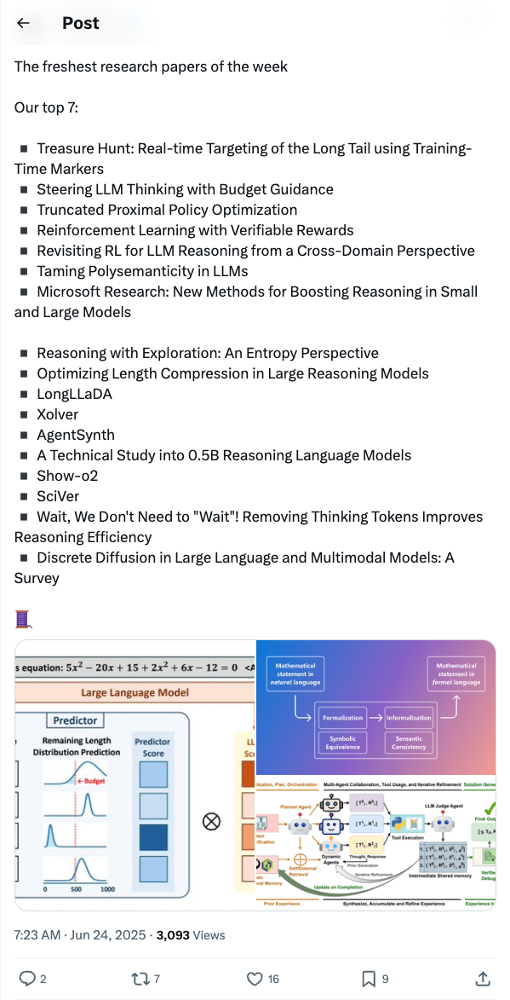

TheTuringPost_本周最新AI研究论文精选
发布时间: 2025-06-23T23:23:26.000Z TuringPost发布了本周精选的七篇最新AI研究论文，涵盖了LLM推理、强化学习、预算引导、多语义性处理、模型推理效率优化以及智能体技术等前沿方向。这些研究旨在提升大型语言模型的性能、效率和可验证性，并探索新的训练和应用范式，为AI领域的研究人员和开发者提供了宝贵的洞察。
2025-06-23
TuringPost发布了本周精选的七篇最新AI研究论文，涵盖了LLM推理、强化学习、预算引导、多语义性处理、模型推理效率优化以及智能体技术等前沿方向。这些研究旨在提升大型语言模型的性能、效率和可验证性，并探索新的训练和应用范式，为AI领域的研究人员和开发者提供了宝贵的洞察。
Sakana AI推出强化学习教师（RLT），革新LLM推理能力教学。RLT模型通过强化学习，直接训练生成清晰、分步的“解释”来教授学生模型。仅7B参数的RLT在竞争性和研究生级别推理任务中，蒸馏和冷启动学生模型时表现优于大数倍的LLM，甚至能有效蒸馏32B学生模型，显著提升开发效率。
Brian Christian首次对10个主流大型语言模型奖励模型进行了大规模详尽分析。研究发现，这些作为LLM“道德指南针”的奖励模型存在显著分歧、基础模型印记、身份词偏见以及单纯曝光效应等问题，揭示了其内部运作的复杂性和潜在偏差。
知名AI科学家Yoshua Bengio警告称，随着前沿AI系统能力和自主性的增强，AI驱动的网络攻击风险将急剧上升。他指出，过去由顶尖黑客完成的任务可能很快由AI自主执行，这需要紧急关注。推文引用Dawn Song的研究，展示AI智能体在网络安全领域的突破，包括通过CyberGym发现15个零日漏洞，以及通过BountyBench解决价值数万美元的真实世界漏洞赏金任务。
Harrison Chase提出“语境工程”一词，将其定义为构建动态系统，以正确格式向大型语言模型提供适当信息和工具，使其有效完成任务。他指出，尽管这不是新概念，但该术语的兴起有望吸引更多关注，并强调了LangChain工具（如LangGraph、LangSmith）在此领域的作用，旨在帮助AI工程师更好地构建系统。
Gary Marcus引用Carlos E. Perez的观点指出，仅凭“蛮力”无法实现通用人工智能（AGI）或最先进的AI（SOTA）。推文揭示Meta和X正面临AI发展困境，因其过度依赖大规模计算和数据堆砌，未能取得实质性进展，这表明当前AI领域存在一种“恐慌”情绪，对现有发展路径的反思日益加剧。
腾讯推出Hunyuan GameCraft框架，旨在利用AIGC技术重塑沉浸式3A游戏体验。该框架通过将键盘鼠标输入统一到共享相机空间，实现对游戏动作的实时精准控制，并采用混合历史条件训练策略自回归扩展视频序列。为提升效率和可玩性，模型引入蒸馏技术，确保长时间序列一致性。GameCraft在一个包含百万级AAA游戏记录的大规模数据集上进行训练，并经合成数据集微调，显著提升了视觉保真度、真实感及动作可控性，展现了在第三人称游戏场景中实现自然控制的强大潜力。
腾讯推出Hunyuan-GameCraft，旨在解决现有技术在动态表达、通用适配、长时一致性及运行效率方面的挑战，实现高动态交互式游戏视频生成。该框架仅需一张图像和提示词，即可生成完整游戏交互视频，通过统一键盘鼠标操作，将移动指令与视角控制整合，实现平滑过渡。系统能精准响应交互信号，自动延展时间一致、三维连贯的视频内容，并保留历史场景信息。Hunyuan-GameCraft基于百余款3A大作数据训练，在Minecraft等环境中表现优异，尤其在三维一致性和场景连贯性上显著领先，为沉浸式游戏体验提供新可能，但目前动作空间主要针对开放世界探索。
Anthropic首席产品官Mike Krieger在播客中分享了其对AI认知的深刻转变，从工具到“可提供原创思考的合作伙伴”。他指出，AI已承担70-90%的代码编写，重塑了传统产品开发流程，产品经理正转变为“系统设计者”，直接参与模型后训练。Krieger强调，优秀的AI产品应学会“何时闭嘴”，不应削弱人类判断力，而应是思维伙伴。Anthropic选择差异化路线，专注于服务开发者和构建者。文章还探讨了AI超预期发展、人机协作模式、未来职业技能培养（好奇心与系统思维）、AI驱动下工程角色与团队协作的巨变，以及产品团队在模型时代的核心价值（可理解性设计、战略聚焦、可能性教育）。
腾讯优图研究团队针对大型语言模型（LLMs）在处理复杂指令时面临的挑战，提出了一种名为“激励推理”（Incentivizing Reasoning）的系统性方法。该方法通过分解复杂指令、结合强化学习（RL）与规则驱动的奖励机制，有效培养了LLMs的深度推理能力。实验结果显示，激励推理显著提升了多数LLMs在复杂指令下的表现，尤其在1.5B参数模型上实现了11.74%的性能提升，使其表现媲美8B模型，并优于传统的思维链（CoT）等方法，为提升LLM的泛化能力和指令遵循精度提供了新途径。
非夕科技，一家具身智能独角兽企业，近期完成亿级美元C轮融资。该公司凭借其开创性的自适应机器人，在物理世界交互和感知-运动策略上取得重大突破，通过端到端模型训练实现高精细度双臂协同操作及机器人刮胡子等复杂任务。非夕的全栈式研发和“通用+仿人”技术路径，使其机器人具备柔性、抗干扰、易部署和可迁移性，广泛应用于汽车、3C、医疗等传统自动化难以满足的场景。其通用机器人基座平台和强大的生态系统，正推动具身智能产业化，并已实现千套级批量交付，引领行业发展。
斯坦福、麻省理工与加州大学伯克利分校研究团队联合推出IneqMath基准，旨在评估大模型在复杂数学推理中的严谨性与合理性。该基准以不等式证明题为切入点，将证明过程拆解为自然语言任务，并引入LLM-as-Judge框架，通过五个独立的“评审器”细致分析模型每一步推理的逻辑链。评估结果显示，尽管GPT-4、Claude等29款主流大模型在最终答案正确率上表现尚可，但其推理过程的正确率普遍极低，最高下降65.5%，揭示了当前大模型在逻辑严谨性方面存在严重的结构性缺陷，即使答案正确也无法保证推理过程的可靠性。研究团队已开放IneqMath排行榜，鼓励全球开发者提交模型以推动大模型在严谨数学论证上的突破。

Void是一个开源的Cursor替代品，旨在提供一个强大的代码编辑器，集成AI智能体功能。它允许用户在代码库上利用AI智能体进行操作，支持代码变更的检查点和可视化，并能本地部署或托管任何AI模型。Void强调数据隐私，直接与AI提供商通信而不保留用户数据。该项目是VS Code的一个分支，提供了完整的源代码，并鼓励社区贡献。

Suna是一个开源的全能型AI智能体，旨在通过自然对话帮助用户轻松完成现实世界任务。它集成了强大的功能，包括无缝浏览器自动化、文件管理、网络爬取、命令行执行、网站部署以及与各种API和服务的集成。Suna能够理解用户需求并交付结果，通过协调这些能力来解决复杂问题并自动化工作流程，是研究、数据分析和日常挑战的理想数字伴侣。其架构基于Python/FastAPI后端、Next.js/React前端、独立的Agent Docker环境和Supabase数据库，并支持多种LLM提供商。
该GitHub仓库收集并公开了包括v0、Cursor、Manus、Devin、Replit Agent等多个知名AI工具和模型的系统提示词及内部工具，提供了超过7000行的结构和功能洞察。项目旨在帮助开发者和安全研究人员深入理解AI系统的工作原理，并强调AI系统安全的重要性，提供安全审计服务。它是一个宝贵的资源，用于学习和分析AI代理的底层机制。

微软云倡导者团队推出了一项为期12周的综合性Web开发课程，旨在教授JavaScript、CSS和HTML基础知识。该课程通过构建如虚拟生态缸、浏览器扩展和太空游戏等24个动手项目，结合测验、讨论和实践作业，采用项目式教学法，有效提升学习者的技能和知识留存。此外，该团队还发布了针对JavaScript的生成式AI新课程，进一步拓展学习领域。
ComfyUI是一个功能强大且模块化的视觉AI引擎和应用，通过基于图/节点/流程图的界面，使用户能够设计和执行高级的Stable Diffusion管道。它支持多种图像、视频、音频和3D模型，如SDXL、Stable Cascade、SD3、SVD、Stable Audio和Hunyuan3D。该平台具备异步队列系统、智能内存管理和多种优化，即使在低VRAM环境下也能高效运行。ComfyUI无需编码即可创建复杂的AI工作流，并支持加载多种模型格式及高级功能如ControlNet、Inpainting和模型合并，是AI内容生成领域的强大工具。

现代参数高效微调（PEFT）方法，如低秩适应（LoRA），降低了定制大型语言模型（LLMs）的成本，但每个下游数据集仍需要单独的优化运行。我们引入了拖拽式LLMs（DnD），这是一种提示条件参数生成器，通过将少量未标记的任务提示直接映射到LoRA权重更新，从而消除了每个任务的训练需求。一个轻量级文本编码器将每个提示批次提炼成条件嵌入，然后由级联超卷积解码器将其转换为完整的LoRA矩阵集。一旦在多样化的提示-检查点对集合中进行训练，DnD能在数秒内生成任务特定参数，带来：i) 比完全微调低至12,000倍的开销；ii) 在未见的常识推理、数学、编码和多模态基准测试中，性能比最强的训练LoRA平均提升高达30%；以及 iii) 尽管从未见过目标数据或标签，仍能实现鲁棒的跨领域泛化。我们的结果表明，提示条件参数生成是基于梯度的适应方法的一种可行替代方案，可用于快速专门化LLMs。我们的项目可在https://jerryliang24.github.io/DnD获取。

在动态环境中协调多个具身智能体仍然是人工智能领域的核心挑战，这需要感知驱动的推理和可扩展的协作策略。虽然最近的工作利用大型语言模型（LLMs）进行多智能体规划，但少数研究已开始探索视觉-语言模型（VLMs）进行视觉推理。然而，这些基于VLM的方法在支持多样化具身类型方面仍然存在局限性。在这项工作中，我们引入了VIKI-Bench，这是首个专为具身多智能体协作设计的层次化基准，具有三个结构化级别：智能体激活、任务规划和轨迹感知。VIKI-Bench包含多样化的机器人具身、多视角视觉观测和结构化监督信号，以评估基于视觉输入的推理。为了展示VIKI-Bench的实用性，我们提出了VIKI-R，这是一个两阶段框架，它使用思维链（Chain-of-Thought）标注的演示来微调预训练的视觉-语言模型（VLM），然后通过多级奖励信号进行强化学习。我们的大量实验表明，VIKI-R在所有任务级别上都显著优于基线方法。此外，我们还表明强化学习能够促使异构智能体之间出现组合式协作模式。总而言之，VIKI-Bench和VIKI-R为推进具身AI系统中的多智能体、视觉驱动协作提供了统一的测试平台和方法。

扩散模型和可控视频生成领域的最新进展，为高质量、时间连贯的视频合成提供了可能，为沉浸式交互游戏体验奠定了基础。然而，当前方法在动态性、通用性、长期一致性和效率方面存在局限性，限制了创建各种游戏视频的能力。为解决这些问题，我们引入了混元-游戏工坊（Hunyuan-GameCraft），一个用于游戏环境中高动态交互式视频生成的新颖框架。为实现细粒度动作控制，我们将标准键盘和鼠标输入统一到共享的摄像机表示空间中，从而促进各种摄像机和移动操作之间的平滑插值。随后，我们提出了一种混合历史条件训练策略，该策略在保留游戏场景信息的同时，自回归地扩展视频序列。此外，为提高推理效率和可玩性，我们实现了模型蒸馏，以减少计算开销，同时保持长时序序列的一致性，使其适用于复杂交互环境中的实时部署。该模型在一个包含超过一百万条来自100多款AAA游戏的玩法录像的大规模数据集上进行训练，确保了广泛的覆盖和多样性，随后在一个精心标注的合成数据集上进行微调，以提高精度和控制力。精选的游戏场景数据显著提升了视觉保真度、真实感和动作可控性。大量实验表明，混元-游戏工坊显著优于现有模型，推动了交互式游戏视频生成的真实感和可玩性。

现代多模态大型语言模型（MLLMs）能够对长达数小时的视频进行推理，但其键值（KV）缓存会随时间线性增长，迅速超出手机、AR眼镜和边缘机器人等设备的固定内存。先前的压缩方案要么假设整个视频和用户查询都可离线获取，要么必须首先构建完整的缓存，因此内存仍随流长度扩展。InfiniPot-V是首个无需训练、与查询无关的框架，它为流式视频理解强制执行一个硬性、与长度无关的内存上限。在视频编码过程中，它会监控缓存，一旦达到用户设定的阈值，就会运行一个轻量级压缩过程，该过程（i）通过时间轴冗余（TaR）度量移除时间冗余的token，以及（ii）通过值范数（VaN）排序保留语义重要的token。在四个开源MLLM以及四个长视频和两个流式视频基准测试中，InfiniPot-V将峰值GPU内存削减高达94%，保持实时生成，并达到或超越完整缓存的准确性——即使在多轮对话中也是如此。通过在无需重新训练或查询知识的情况下解决KV缓存瓶颈，InfiniPot-V弥补了设备端流式视频助手方面的空白。

在本报告中，我们介绍了混元3D 2.5，这是一套强大的3D扩散模型，旨在生成高保真、细节丰富的纹理3D资产。混元3D 2.5沿袭了其前一版本混元3D 2.0的两阶段管线，同时在形状和纹理生成方面都取得了显著进展。在形状生成方面，我们引入了一个新的形状基础模型——LATTICE，该模型通过大规模高质量数据集、模型尺寸和计算资源进行训练。我们最大的模型达到了100亿参数，能够生成清晰、细节丰富的3D形状，并精确遵循图像到3D的对应关系，同时保持网格表面干净平滑，显著缩小了生成3D形状与手工制作3D形状之间的差距。在纹理生成方面，它通过一种从混元3D 2.0 Paint模型扩展而来的新型多视图架构，升级为基于物理渲染（PBR）。我们广泛的评估表明，混元3D 2.5在形状和端到端纹理生成方面均显著优于现有方法。

结合预训练专家模型为可扩展的多模态推理提供了巨大潜力，但由于输入模态日益多样化和任务复杂性增加，构建统一框架仍具挑战。例如，医疗诊断需要对结构化临床表格进行精确推理，而金融预测则依赖于解释基于图表的数据以做出明智的预测。为应对这一挑战，我们引入了MEXA，一个无需训练的框架，它执行模态和任务感知的多专家模型聚合，以实现在多样化和不同领域中有效的多模态推理。MEXA根据输入模态和任务特定的推理需求（即技能）动态选择专家模型。每个专家模型都专注于一个模态-任务对，并生成可解释的文本推理输出。然后，MEXA使用大型推理模型（LRM）对这些输出进行聚合和推理，以生成最终答案。这种模块化设计允许在不同领域进行灵活透明的多模态推理，而无需额外的训练开销。我们对MEXA在各种多模态基准上进行了广泛评估，包括视频推理、音频推理、3D理解和医疗问答。MEXA始终优于强大的多模态基线，突显了我们专家驱动的选择和聚合方法在各种多模态推理任务中的有效性和广泛适用性。